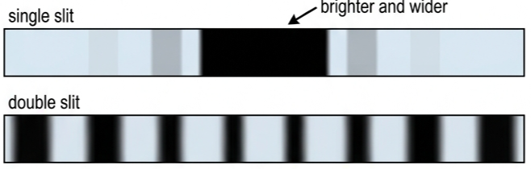
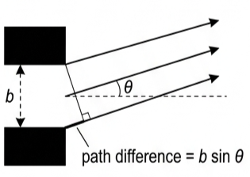
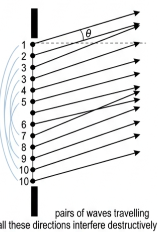
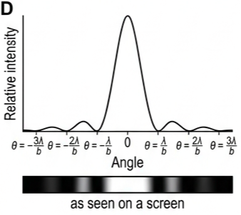
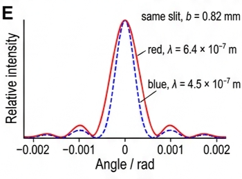
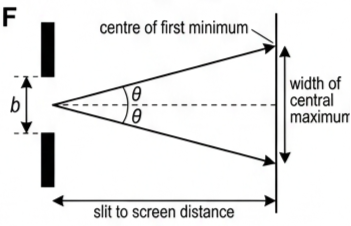
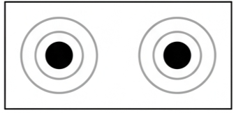

🎯 Hook – the slit that is 200 wavelengths wide
A diffraction pattern can be produced by monochromatic light passing through a narrow slit, using the same arrangement as the double-slit experiment but with the double slits replaced by a single slit. The surprise is that the pattern has fringes, similar to those produced by double slits — even though there is only one opening.
It is important to understand that even a 'narrow' slit of width, for example, \(b = 0.1\ \text{mm}\) is much greater than one wavelength, \(\lambda\), of light. In fact:
So the slit is not "one wavelength wide". Something inside the slit must be interfering with itself.

📐 Interference within a single wavefront
We need to imagine that a plane wavefront emerging from a single slit acts as if it was a series of point sources of secondary wavelets, maybe one for every wavelength. These ideas were famously first put forward as an explanation for the propagation of all waves by Christian Huygens in 1690.
These wavelets will be coherent and they will interfere.
Firstly, consider how secondary wavelets from the edge of the slit may interfere. Figure C3.49 shows a typical direction, \(\theta\), in which secondary waves travel away from a single narrow slit of width, \(b\).
If \(\theta\) is zero, all the secondary waves will interfere constructively in this direction (straight through the slit) because there is no path difference between them. (Of course, in theory, waves travelling parallel to each other in the same direction cannot meet and interfere, so we will assume that the waves' directions are very nearly parallel.)
Consider what happens for angles increasingly greater than zero. The path difference, as shown in Figure C3.49, equals \(b\sin\theta\) and this increases as the angle \(\theta\) increases. There will be angles at which the waves from the two edges of the slit interfere constructively because the path difference has increased to become equal to \(1\lambda\), \(2\lambda\), \(3\lambda\) … and so on.

🔗 Pairing off the wavelets
But if secondary wavelets from the edges of the slit interfere constructively, what about interference between all the other secondary wavelets? Consider Figure C3.50 in which the slit has been divided into a number of point sources of secondary wavelets. (Ten points have been chosen, but it could be many more.)
If the angle, \(\theta\), is such that secondary wavelets from points 1 and 10 would interfere constructively because the path difference is one wavelength, then secondary waves from 1 and 6 must have a path difference of half a wavelength and interfere destructively. Similarly, waves from points 2 and 7, points 3 and 8, points 4 and 9 and points 5 and 10 must all interfere destructively.
In this way waves from all points can be 'paired off' with others, so that the first minimum of the diffraction pattern occurs at such an angle that waves from the edges of the slit would otherwise interfere constructively.

The first minimum of the diffraction pattern occurs when the path difference between secondary waves from the edge of the slit is equal to one wavelength.
📏 The small-angle result and the higher minima
For the diffraction of light, the angle \(\theta\) is usually small and approximately equal to \(\sin\theta\), if the angle is expressed in radians. (This is valid for angles up to approximately 10°, 0.17 rad.) So that:
Similar reasoning will show that other diffraction minima will occur at angles \(\theta = \lambda/b\), \(2\lambda/b\), \(3\lambda/b\) … and so on:
These angles are represented on the intensity–angle graph shown in Figure C3.51.
📈 Graphs every examiner uses
| Graph type | Axes (X, Y) | Shape | What to read |
|---|---|---|---|
| Intensity–angle (single slit) | X: angle \(\theta\); Y: relative intensity | Tall central peak at \(\theta = 0\), zeros at \(\pm\lambda/b\), \(\pm 2\lambda/b\), \(\pm 3\lambda/b\); small side peaks between them | First minimum position \(\Rightarrow\) \(\lambda/b\). Central maximum is twice as wide as any side peak. |
| Screen appearance strip | X: position on screen; Y: brightness | Wide bright central band, then progressively fainter bands separated by dark gaps | Half-width of central band \(\div\) slit–screen distance \(=\theta\). |
| Two wavelengths, same slit | X: angle \(\theta\); Y: relative intensity | Two overlaid patterns; the longer wavelength has its minima further out | \(\theta \propto \lambda\): red spreads more than blue through the same slit. |
| \(\theta\) against \(1/b\) | X: \(1/b\); Y: first-minimum angle \(\theta\) | Straight line through the origin | Gradient \(=\lambda\). |


✍️ Worked example C3.5 – monochromatic light through a 0.0730 mm gap
Monochromatic light of wavelength 663 nm (\(663 \times 10^{-9}\ \text{m}\)) is shone through a gap of width 0.0730 mm.
a Calculate the angle at which the first minimum of the diffraction pattern is formed.
b If the pattern is observed on a screen that is 2.83 m from the slit, determine the width of the central maximum.
\(b = 0.0730\ \text{mm} = 7.30 \times 10^{-5}\ \text{m}\)
slit–screen distance \(= 2.83\ \text{m}\)
\(= \dfrac{663 \times 10^{-9}}{7.30 \times 10^{-5}}\)
\(= 9.08 \times 10^{-3}\ \text{radians}\)
Equation (b): \(\theta \approx \sin\theta = \dfrac{\text{half width}}{\text{slit–screen distance}}\)
half width \(= (9.08 \times 10^{-3}) \times 2.83\)
\(= 0.0257\ \text{m}\) (0.02569… seen on calculator display)
b width of central maximum \(= 0.02569 \times 2\)
\(= 0.0514\ \text{m}\).
The central bright band is about 5 cm across — easily visible, and twice as wide as each side band.

🔭 Real-world: resolution
When light waves enter our eyes, they are diffracted and this affects our ability to see detail. The ability of our eyes (and/or optical instruments) to see objects as separate is called resolution. For example, our eyes will not be able to resolve the individual leaves seen on a distant tree.
Consider two identical sources of light at night, for example car headlights a long way away. The light waves are effectively emitted from point sources, but when they are received by the eye, the images on the back of the eye (retina) are not points, but diffraction rings (rings are formed because the aperture in the eye is circular). When the lights are close we can see two headlights; when the lights are a long way away (maybe 5 km or more), the diffraction patterns overlap and cannot be distinguished — only one light is seen.

Most of the wave intensity is concentrated near the centre of the diffraction rings, so under most circumstances diffraction effects are not significant. However, when we want to see fine details under a microscope, or make astronomical observations of distant objects, diffraction is the major factor limiting resolution.
🚀 HL Extension – from one slit to many
ATL C3C (thinking skills): radio telescopes such as the Jodrell Bank telescope in England are much larger than optical telescopes. Explain why, supporting your explanation with scientific reasoning.
Answer: radio wavelengths are of the order of centimetres to metres, roughly \(10^{6}\) times longer than visible light, so for the same aperture \(b\) the ratio \(\lambda/b\) — and therefore the diffraction spreading — is enormously larger. Only a very large \(b\) brings \(\lambda/b\) back down to an angle small enough to resolve separate radio sources.
Next we move from one slit to two slits, multiple slits and diffraction gratings. Syllabus content: interference patterns from multiple slits and diffraction gratings as given by:
For two narrow slits a distance \(d\) apart, the fringe spacing \(s\) on a screen a distance \(D\) away is:
That section discusses the advantages of passing light waves through more and more parallel slits, and how the pattern of single-slit diffraction affects interference between two or more slits.
Challenge: a slit is widened from 0.05 mm to 0.15 mm with the wavelength unchanged. By what factor does the width of the central maximum change? (Answer: it becomes one third as wide, because \(\theta \propto 1/b\).)
⚠️ Trap corner – common mistakes
| Misconception | Correct view |
|---|---|
| Single-slit and double-slit patterns are the same | They are similar and easily confused. The most obvious difference is that the central fringe of the single-slit diffraction pattern is brighter and wider than the other fringes. |
| Diffraction and interference are two separate phenomena | Diffraction is the change of direction at gaps and obstacles; the pattern that follows is explained using the principles of interference (superposition). |
| \(b\sin\theta = \lambda\) marks a bright fringe, because the edge waves are in phase | It marks the first minimum. Every wavelet pairs off with a partner half a slit away whose path difference is \(\lambda/2\), so the whole slit cancels. |
| A slit is "about one wavelength wide" | A 0.1 mm slit is roughly 200 wavelengths of visible light wide. The pattern comes from interference within that width. |
| \(\theta = \lambda/b\) can be used at any angle | It relies on \(\theta \approx \sin\theta\), valid only up to about 10° (0.17 rad), and \(\theta\) must be in radians. |
Complete the statements:
In the equation \(\theta = \lambda/b\), the angle \(\theta\) must be measured in .
The small-angle approximation \(\theta \approx \sin\theta\) is valid up to approximately °.
A 0.1 mm slit is about wavelengths of visible light wide.
a State in which part of the electromagnetic spectrum this radiation occurs.
b Suggest how it could be detected.
c Calculate the angle of the first minimum of the diffraction pattern. [4 marks]
✓ b By fluorescence — the UV causes a phosphor screen to glow visibly; or by a photographic film / UV photodiode / photoelectric detector. [1]
✓ c \(\theta = \dfrac{\lambda}{b} = \dfrac{2.37 \times 10^{-7}}{4.70 \times 10^{-5}}\) [1]
✓ \(= 5.04 \times 10^{-3}\ \text{rad}\) [1]
✓ \(\lambda = 0.0038 \times 1.5 \times 10^{-4}\) [1]
✓ \(\lambda = 5.7 \times 10^{-7}\ \text{m}\) (570 nm, green-yellow). [1]
✓ \(\theta = \dfrac{0.014}{1.92} = 7.29 \times 10^{-3}\ \text{rad}\) [1]
✓ \(b = \dfrac{\lambda}{\theta} = \dfrac{6.2 \times 10^{-7}}{7.29 \times 10^{-3}}\) [1]
✓ \(b = 8.5 \times 10^{-5}\ \text{m}\) (0.085 mm). [1]
b Add to your graph a sketch to show how monochromatic blue light would be affected by the same slit. [6 marks]
✓ Tall central peak plus at least two much smaller side peaks each side (five peaks in total). [1]
✓ Zeros marked at \(\theta = \pm\lambda/b\), \(\pm 2\lambda/b\), \(\pm 3\lambda/b\), with \(\lambda/b = \dfrac{6.4 \times 10^{-7}}{8.2 \times 10^{-4}} = 7.8 \times 10^{-4}\ \text{rad}\). [1]
✓ b Blue curve drawn with the same shape but narrower. [1]
✓ Blue minima closer to the centre because \(\theta \propto \lambda\); e.g. for \(\lambda = 4.5 \times 10^{-7}\ \text{m}\), \(\theta_1 = 5.5 \times 10^{-4}\ \text{rad}\). [1]
✓ Central maximum of the blue pattern narrower and taller/sharper, same central position. [1]
✓ Radio wavelengths are very much longer than those of visible light, so for the same aperture the diffraction spreading is far greater and two nearby sources cannot be resolved. [1]
✓ Resolution can only be improved by increasing the aperture width \(b\) (reducing \(\lambda\) is not possible for a chosen radio source), so the dish must be very large. [1]